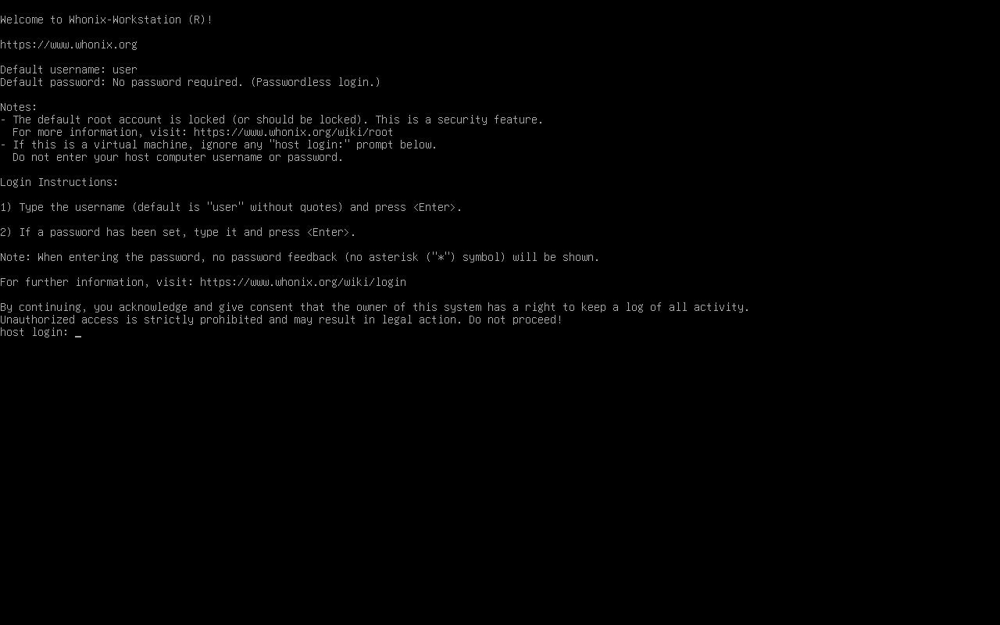
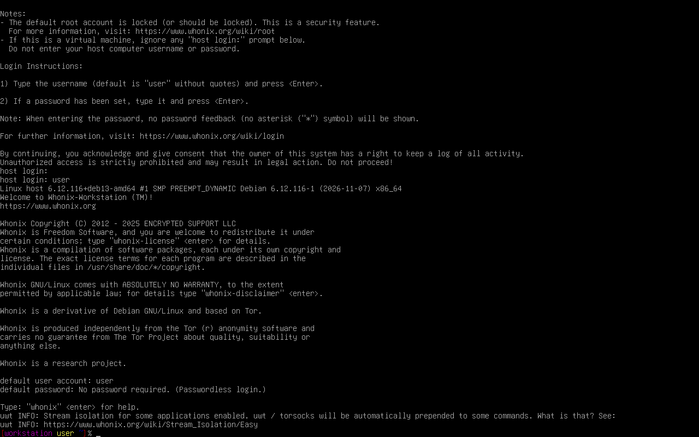

whonix-func pass
exit 0
dm-whonix-pair: [functional-cli] boot Gateway (Whonix-Gateway-CLI)
dm-whonix-pair: [functional-cli] boot Workstation (Whonix-Workstation-CLI) into the user session
dm-shared-apt-repo: attached shared -> /srv/derivative-maker on Whonix-Workstation-CLI
dm-shared-apt-repo: mounts at /mnt/shared on the next boot (mnt-shared-vbox.service)
dm-whonix-pair: [functional-cli] wait for Tor egress (systemcheck SocksPort + TransPort)
tr: write error: Broken pipe
[INFO] [systemcheck] SocksPort IP Leak Test: Testing Tor's SocksPort (SOCKS_PORT_SYSTEMCHECK: 9110)...
[ERROR] [systemcheck] SocksPort IP Leak Test Result: https://check.torproject.org/api/ip was not reachable.
You could check, if you can reach https://check.torproject.org/api/ip via the Tor Browser Bundle.
(curl exit code: [56] - [Failure in receiving network data.])
[INFO] [systemcheck] system default networking IP Leak Test: system default networking IP Leak Test...
[INFO] [systemcheck] system default networking IP Leak Test: Connected to Tor.
dm-whonix-pair: Tor not confirmed yet (attempt 1); retrying
tr: write error: Broken pipe
[INFO] [systemcheck] SocksPort IP Leak Test: Testing Tor's SocksPort (SOCKS_PORT_SYSTEMCHECK: 9110)...
[INFO] [systemcheck] SocksPort IP Leak Test: Connected to Tor.
[INFO] [systemcheck] system default networking IP Leak Test: system default networking IP Leak Test...
[ERROR] [systemcheck] system default networking IP Leak Test Test Result: Tor's TransPort was not reachable.
It is normal for this error to temporarily occur.
(curl exit code: [35] - [SSL connect error. The SSL handshaking failed.])
dm-whonix-pair: Tor not confirmed yet (attempt 2); retrying
tr: write error: Broken pipe
[INFO] [systemcheck] SocksPort IP Leak Test: Testing Tor's SocksPort (SOCKS_PORT_SYSTEMCHECK: 9110)...
[INFO] [systemcheck] SocksPort IP Leak Test: Connected to Tor.
[INFO] [systemcheck] system default networking IP Leak Test: system default networking IP Leak Test...
[INFO] [systemcheck] system default networking IP Leak Test: Connected to Tor.
dm-whonix-pair: [functional-cli] enable the local apt repo (whonix) in the Workstation
Ign:1 file:/mnt/shared/aptrepo_local/kicksecure local InRelease
Ign:2 file:/mnt/shared/aptrepo_local/whonix local InRelease
Get:3 file:/mnt/shared/aptcache/debian trixie InRelease [140 kB]
Get:4 file:/mnt/shared/aptcache/debian trixie-updates InRelease [47.3 kB]
Get:5 file:/mnt/shared/aptcache/debian-security trixie-security InRelease [43.4 kB]
Get:6 file:/mnt/shared/aptrepo_local/kicksecure local Release [57.5 kB]
Get:7 file:/mnt/shared/aptrepo_local/whonix local Release [56.7 kB]
Get:3 file:/mnt/shared/aptcache/debian trixie InRelease [140 kB]
Get:4 file:/mnt/shared/aptcache/debian trixie-updates InRelease [47.3 kB]
Get:5 file:/mnt/shared/aptcache/debian-security trixie-security InRelease [43.4 kB]
Get:6 file:/mnt/shared/aptrepo_local/kicksecure local Release [57.5 kB]
Get:7 file:/mnt/shared/aptrepo_local/whonix local Release [56.7 kB]
Ign:8 file:/mnt/shared/aptrepo_local/kicksecure local Release.gpg
Get:9 file:/mnt/shared/aptrepo_local/kicksecure local/non-free amd64 Packages [1,549 B]
Ign:10 file:/mnt/shared/aptrepo_local/whonix local Release.gpg
Get:11 file:/mnt/shared/aptrepo_local/kicksecure local/main amd64 Packages [38.5 kB]
Get:12 file:/mnt/shared/aptrepo_local/kicksecure local/contrib amd64 Packages [501 B]
Get:13 file:/mnt/shared/aptrepo_local/whonix local/main amd64 Packages [14.2 kB]
Get:14 file:/mnt/shared/aptcache/debian trixie/main amd64 Packages [9,678 kB]
Get:15 file:/mnt/shared/aptcache/debian trixie/contrib amd64 Packages [53.9 kB]
Get:16 file:/mnt/shared/aptcache/debian trixie/non-free amd64 Packages [100 kB]
Get:17 file:/mnt/shared/aptcache/debian trixie/non-free-firmware amd64 Packages [6,884 B]
Get:18 file:/mnt/shared/aptcache/debian trixie-updates/main amd64 Packages [1,108 B]
Get:19 file:/mnt/shared/aptcache/debian-security trixie-security/contrib amd64 Packages [3,152 B]
Get:20 file:/mnt/shared/aptcache/debian-security trixie-security/main amd64 Packages [305 kB]
Get:21 file:/mnt/shared/aptcache/debian-security trixie-security/non-free-firmware amd64 Packages [544 B]
Reading package lists...
dm-whonix-pair: [functional-cli] verify the local build payloads are installed in the Workstation
debconf: unable to initialize frontend: Dialog
debconf: (Dialog frontend will not work on a dumb terminal, an emacs shell buffer, or without a controlling terminal.)
debconf: falling back to frontend: Readline
debconf: unable to initialize frontend: Readline
debconf: (This frontend requires a controlling tty.)
debconf: falling back to frontend: Teletype
debconf: unable to initialize frontend: Teletype
debconf: (This frontend requires a controlling tty.)
debconf: falling back to frontend: Noninteractive
dm-whonix-pair: [functional-cli] check 8: console login + systemcheck (real logind session)
dm-whonix-pair: check 8 PASS (systemcheck --cli --ci via real console login as user)
dm-whonix-pair: [functional-cli] run the release-check battery over guestcontrol (no OCR)
dm-whonix-pair: check 1 PASS
dm-whonix-pair: check 5 PASS
dm-whonix-pair: check 6 (GUI login) SKIPPED in this gate -- CLI edition has no graphical session (no labwc compositor)
dm-whonix-pair: check 4 PASS
dm-whonix-pair: check 8 (systemcheck) SKIPPED in this gate -- run separately via a real console login (ws_cli_console_systemcheck); guestcontrol has no logind user manager
dm-whonix-pair: check 2 (sysmaint session boot) SKIPPED in this gate -- CLI edition has no user/sysmaint boot-role split (wiki/sysmaint)
dm-whonix-pair: check 3 PASS (apt-get full-upgrade from local repo, detached over guestcontrol)
dm-whonix-pair: [functional-cli] PASS -- Workstation passed the CLI release-check battery + console-login systemcheck
pair-defined
[state card -- rendered text, not a screenshot]
Whonix pair under test (pre-boot)
Gateway VM: Whonix-Gateway-CLI
memory=768
vram=16
firmware="BIOS"
VMState="poweroff"
nic1="nat"
Workstation VM: Whonix-Workstation-CLI
memory=768
vram=16
firmware="BIOS"
VMState="poweroff"
nic1="intnet"
pass content: UNVALIDATED (no golden) gateway-booted
pass content: UNVALIDATED (no golden) workstation-booted

gateway-tor-bootstrap
[state card -- rendered text, not a screenshot]
Gateway Tor bootstrapped
Workstation systemcheck confirmed the Gateway's Tor SocksPort + TransPort are up (positive control). The egress path Workstation -> Gateway -> Tor is live; the battery runs only now.
pass content: UNVALIDATED (no golden) workstation-tor-confirmed

local-repo-enabled
[state card -- rendered text, not a screenshot]
Local apt repo enabled in the Workstation
The derivative 'local' apt sources (kicksecure whonix) plus the Debian base suites (trixie trixie-updates trixie-security) are live. Check 3 upgrades offline from these file: sources, no Tor.
--- apt-cache policy: local repo origins ---
500 file:/mnt/shared/aptrepo_local/kicksecure local/contrib amd64 Packages
500 file:/mnt/shared/aptrepo_local/kicksecure local/main amd64 Packages
500 file:/mnt/shared/aptrepo_local/kicksecure local/non-free amd64 Packages
500 file:/mnt/shared/aptrepo_local/whonix local/main amd64 Packages
local-build-installed
[state card -- rendered text, not a screenshot]
Local build payloads installed
Every locally-built package already installed (except the guest-additions installer and dkms packages, whose reinstall would tear down the test transport or rebuild kernel modules) was reinstalled from the local repo; each installed version matches the local build, so check 3's verdict applies to THIS build, not the image's same-version payload.
--- installed version == local build (per package) ---
OK: apparmor-profile-thunderbird = 3:6.3-1 (matches local build 3:6.3-1)
OK: apparmor-profile-torbrowser = 3:10.0-1 (matches local build 3:10.0-1)
OK: apparmor-profiles-kicksecure = 3:37.9-1 (matches local build 3:37.9-1)
OK: bindp = 3:4.8-1 (matches local build 3:4.8-1)
OK: bootclockrandomization = 3:8.3-1 (matches local build 3:8.3-1)
OK: damngpl = 3:4.9-1 (matches local build 3:4.9-1)
OK: dist-base-files = 3:16.6-1 (matches local build 3:16.6-1)
OK: dist-general-cli = 3:37.9-1 (matches local build 3:37.9-1)
OK: dist-general-server = 3:37.9-1 (matches local build 3:37.9-1)
OK: dist-nonqubes-cli = 3:37.9-1 (matches local build 3:37.9-1)
OK: dist-system-metadata = 3:1.1-1 (matches local build 3:1.1-1)
OK: dummy-dependency-mta = 3:37.9-1 (matches local build 3:37.9-1)
OK: grub-live = 3:11.5-1 (matches local build 3:11.5-1)
OK: grub-live-dracut = 3:11.5-1 (matches local build 3:11.5-1)
OK: helper-scripts = 3:55.6-1 (matches local build 3:55.6-1)
OK: initializer-dist = 3:9.6-1 (matches local build 3:9.6-1)
OK: legacy-dist = 3:21.7-1 (matches local build 3:21.7-1)
OK: msgcollector = 3:18.1-1 (matches local build 3:18.1-1)
OK: privleap = 3:7.1-1 (matches local build 3:7.1-1)
OK: repository-dist = 3:14.1-1 (matches local build 3:14.1-1)
OK: sdwdate = 3:29.6-1 (matches local build 3:29.6-1)
OK: security-misc-server = 3:54.2-1 (matches local build 3:54.2-1)
OK: security-misc-shared = 3:54.2-1 (matches local build 3:54.2-1)
OK: setup-dist = 3:12.6-1 (matches local build 3:12.6-1)
OK: swap-file-creator = 3:9.7-1 (matches local build 3:9.7-1)
OK: systemcheck = 3:53.3-1 (matches local build 3:53.3-1)
OK: timesanitycheck = 3:10.6-1 (matches local build 3:10.6-1)
OK: tirdad = 0.3.5-1 (matches local build 0:0.3.5-1)
OK: tor-ctrl = 3:7.4-1 (matches local build 3:7.4-1)
OK: usability-misc = 3:42.1-1 (matches local build 3:42.1-1)
OK: uwt = 3:10.4-1 (matches local build 3:10.4-1)
OK: whonix-base-files = 3:12.3-1 (matches local build 3:12.3-1)
OK: whonix-firewall = 3:19.5-1 (matches local build 3:19.5-1)
OK: whonix-general-cli = 3:27.4-1 (matches local build 3:27.4-1)
OK: whonix-workstation-general-cli = 3:27.4-1 (matches local build 3:27.4-1)
OK: whonix-workstation-nonqubes-cli = 3:27.4-1 (matches local build 3:27.4-1)
OK: whonix-workstation-packages-dependencies-pre = 3:27.4-1 (matches local build 3:27.4-1)
OK: whonix-workstation-vm-cli = 3:27.4-1 (matches local build 3:27.4-1)
OK: whonix-workstation-vm-server = 3:27.4-1 (matches local build 3:27.4-1)
OK: whonix-ws-network-conf = 3:5.1-1 (matches local build 3:5.1-1)
pass content: UNVALIDATED (no golden) console-login

check8-systemcheck (post-boot checks)
[state card -- rendered text, not a screenshot]
Release check 8: systemcheck (pass)
PASS -- command: systemcheck --cli --ci (ran in a real getty logind session as 'user' and exited 0; a CLI edition has no logind user manager over guestcontrol, so it is driven via a genuine console login, not the headless battery).
--- systemcheck output (last lines) ---
You can adjust these settings using "Manage Passwords" and "Manage GUI Autologin"
in the System Maintenance Panel.
See also: Physical Security[3].
Links:
[1] https://www.kicksecure.com/wiki/Login
[2] https://www.kicksecure.com/wiki/Systemcheck#Login_Security_Check_-_Meaning_of_Colors
[3] https://www.kicksecure.com/wiki/Systemcheck#Physical_Security_Check
[INFO] [systemcheck] Whonix APT Repository: Enabled.
When the Whonix team releases TRIXIE updates,
they will be AUTOMATICALLY installed (when you run apt-get dist-upgrade)
along with updated packages from the Debian team. Please read https://www.whonix.org/wiki/Trust to understand the risk.
If you want to change this, use:
sudo repository-dist
[INFO] [systemcheck] Debian Package Update Check: Checking for software updates via apt-get... ( Documentation: https://www.whonix.org/wiki/Update )
[WARNING] [systemcheck] Debian Package Update[1] Check Result: apt-get reports that packages can be updated.
Please update this machine:
(Open a terminal, Start Menu - System - Terminal.)
upgrade-nonroot
Links:
[1] https://www.whonix.org/wiki/Update
[INFO] [systemcheck] Please donate!
See: https://www.whonix.org/wiki/Donate
check1-user-session-boot (post-boot checks)
[state card -- rendered text, not a screenshot]
Release check 1: user session boot (pass)
PASS -- command: ! grep -q boot-role=sysmaint /proc/cmdline
check5-CLI-login (post-boot checks)
[state card -- rendered text, not a screenshot]
Release check 5: CLI login (pass)
PASS -- command: whoami
--- check output (last lines) ---
user
check6-GUI-login (post-boot checks)
[state card -- rendered text, not a screenshot]
Release check 6: GUI login (routed)
ROUTED -- not run over this gate's transport: CLI edition has no graphical session (no labwc compositor)
check4-networking (post-boot checks)
[state card -- rendered text, not a screenshot]
Release check 4: networking (pass)
PASS -- command: curl --silent --fail --max-time 30 --output /dev/null https://deb.debian.org
--- check output (last lines) ---
tr: write error: Broken pipe
check8-systemcheck (post-boot checks)
[state card -- rendered text, not a screenshot]
Release check 8: systemcheck (routed)
ROUTED -- not run over this gate's transport: run separately via a real console login (ws_cli_console_systemcheck); guestcontrol has no logind user manager
check2-sysmaint-session-boot (post-boot checks)
[state card -- rendered text, not a screenshot]
Release check 2: sysmaint session boot (routed)
ROUTED -- not run over this gate's transport: CLI edition has no user/sysmaint boot-role split (wiki/sysmaint)
check3-upgrade-nonroot (post-boot checks)
[state card -- rendered text, not a screenshot]
Release check 3: upgrade-nonroot (pass)
PASS -- command: dsudo apt-get -o Dir::Etc::sourceparts=/etc/apt/sources.list.d.localtest -o Dir::Etc::sourcelist=/dev/null -o APT::Sandbox::User=root --update full-upgrade --yes
--- check output (last lines) ---
Setting up linux-headers-6.12.117+deb13-common (6.12.117-1) ...
Setting up linux-image-amd64 (6.12.117-1) ...
Setting up linux-headers-6.12.117+deb13-amd64 (6.12.117-1) ...
Setting up linux-headers-amd64 (6.12.117-1) ...
Processing triggers for security-misc-shared (3:54.2-1) ...
debconf: unable to initialize frontend: Dialog
debconf: (Dialog frontend will not work on a dumb terminal, an emacs shell buffer, or without a controlling terminal.)
debconf: falling back to frontend: Readline
debconf: unable to initialize frontend: Readline
debconf: (This frontend requires a controlling tty.)
debconf: falling back to frontend: Teletype
debconf: unable to initialize frontend: Teletype
debconf: (This frontend requires a controlling tty.)
debconf: falling back to frontend: Noninteractive
INFO: triggered security-misc-shared: 'security-misc-shared' security-misc-shared DPKG_MAINTSCRIPT_NAME: 'postinst' $\*: 'triggered /usr' 2: '/usr'
/usr/libexec/security-misc/mmap-rnd-bits: INFO: Successfully written ASLR map config file:
/etc/sysctl.d/30_security-misc_aslr-mmap.conf
Running SUID Disabler and Permission Hardener... See also:
https://www.kicksecure.com/wiki/SUID_Disabler_and_Permission_Hardener
/var/lib/dpkg/info/security-misc-shared.postinst: INFO: running: permission-hardener enable
permission-hardener [NOTICE]: Executing: setcap -r /bin/ping
permission-hardener [NOTICE]: To compare the current and previous permission modes, install 'meld' (or preferred diff tool) for comparison of file mode changes:
sudo apt install --no-install-recommends meld
meld /var/lib/permission-hardener-v2/existing_mode/statoverride /var/lib/permission-hardener-v2/new_mode/statoverride
/var/lib/dpkg/info/security-misc-shared.postinst: INFO: Permission hardening success.
functional-verdict
[state card -- rendered text, not a screenshot]
PASS -- CLI release-check battery + console systemcheck
The Workstation passed the CLI numbered release-check battery over the Gateway's Tor, plus systemcheck via a real console login (check 8). Per-check cards above carry each result.
pass content: UNVALIDATED (no golden) workstation-final
pair-poweroff
[state card -- rendered text, not a screenshot]
Pair teardown (final VM states below)
Gateway Whonix-Gateway-CLI: poweroff
Workstation Whonix-Workstation-CLI: poweroff